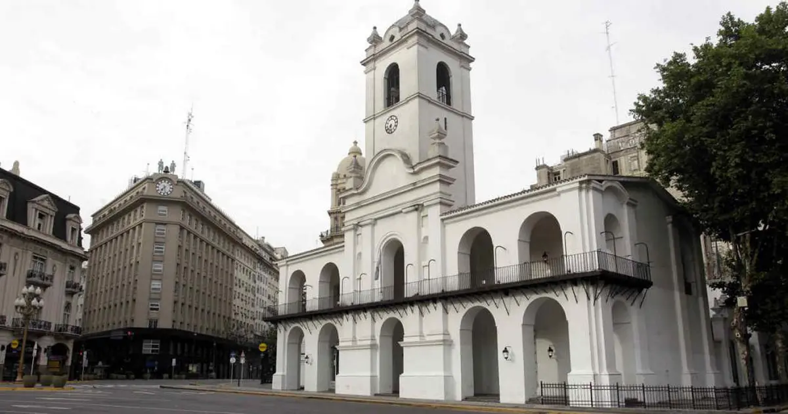
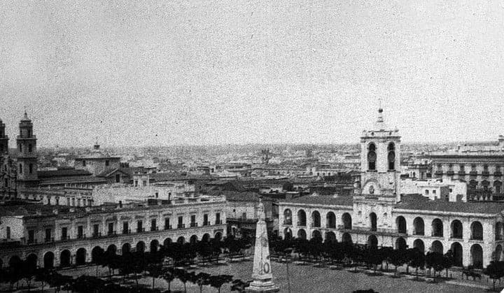

Historia
En el Cabildo de Buenos Aires funcionó el Cabildo de la Ciudad de la Santísima Trinidad y Puerto de Nuestra Señora del Buen Ayre, una institución que inicialmente fue un cabildo colonial fundado por Juan de Garay en 1580 durante la segunda fundación de la ciudad de Buenos Aires y que luego de la Revolución de Mayo de 1810, que derrocó al virrey español Baltasar Hidalgo de Cisneros y derivó en la guerra que llevó a la independencia de las Provincias Unidas del Río de la Plata, se transformó en una Junta de Gobierno que funcionó hasta su disolución en 1821 por el gobernador de Buenos Aires Martín Rodríguez. También en el edificio del Cabildo de Buenos Aires funcionó la Real Audiencia de Buenos Aires, el más alto tribunal de apelación de segunda instancia en el territorio, desde 6 de abril de 1661 hasta el 23 de enero de 1812, cuando se la reemplazó por una Cámara de Apelaciones. El 13 de septiembre de 1810, la Primera Junta creó la Biblioteca Pública de Buenos Aires, siendo su primera ubicación, durante dos años, el edificio del Cabildo. Pero la institución que funcionó por más tiempo en ese edificio fue la Cárcel de Buenos Aires, desde 1608 hasta 1877, cuando se transfirieron sus presos a la desaparecida Penitenciaría Nacional de la calle Las Heras, cuando fue inaugurada. Desde noviembre de 1939 el edificio funciona como museo. En la actualidad la expresión cabildo de Buenos Aires se utiliza para referirse al edificio que albergó al ayuntamiento, el cual, con modificaciones en su estructura, es hoy el Museo Histórico Nacional del Cabildo y de la Revolución de Mayo.
Primera Construcción
El 3 de marzo de 1608, el alcalde Manuel de Frías propuso la necesidad de construir un cabildo. Ese 30 de junio, Hernandarias comunicó que los trabajos ya habían comenzado. El lote para el nuevo edificio ya había sido asignado por Garay en 1580. En realidad el solar, situado al frente de la Plaza Mayor, se encontraba en contra de lo reglamentado por las Leyes de Indias, que establecían que el Cabildo debía ubicarse entre la Plaza y el Templo, junto a las Casas Reales y a la Aduana, en un sector más lejano. La obra se financió por medio de nuevos impuestos a las naves que entraban y salían del puerto de Buenos Aires.
La construcción de las dos humildes salas (la Sala Capitular y la Cárcel) estuvo a cargo del alarife Juan Méndez, mientras que Hernando de la Cueva estuvo a cargo de la tirantería, Pedro Ramírez de las puertas y ventanas, Hernando Álvarez del revoque y blanqueo y unos tejeros brasileros de la techumbre. Su construcción finalizó hacia 1610, aunque al poco tiempo comenzaron varias remodelaciones a su forma original que terminarían después de 200 años. En 1612 concluyeron las obras de las Casas del Cabildo, que incluían un solar y locales que luego se alquilarían. Después de dos años, y debido a la cantidad de presos alojados, el Cabildo resultó chico y tuvo que ser destinado totalmente a su función de cárcel, con lo cual las reuniones de autoridades se realizaron en la casa del gobernador y posteriormente en el fuerte.
Debido a que durante varios años no se hizo un mantenimiento del edificio, pronto se lo vio en ruinas. El primitivo Cabildo comenzó a derrumbarse ya en 1632, con lo cual se emprendió la construcción de uno nuevo, que recién comenzó en 1635 y se extendió durante más de cinco años debido a la falta de fondos. En mayo de 1682, las autoridades propusieron la construcción de un edificio de dos plantas, que contendría: Planta alta: Sala Capitular y Archivo. Planta baja: cárcel para personas privilegiadas, calabozos comunes para hombres y otro para mujeres, cuarto para vigilancia y habitaciones para jueces y escribanos. Sin embargo, el proyecto no progresó, y la ciudad se contentó con mantener el viejo edificio, insuficiente a medida que comenzaba a crecer la población.
Visitas
EL MUSEO ES GRATUITO.
Horario
De miércoles a domingos de 10.30 a 18.00 hs
Lunes y Martes cerrado.
Visitas Guiadas
De Miércoles a Viernes 15:30 hs.
Sábados y Domingos 11 hs. y 15.30 hs
Como Llegar
En colectivo
2, 6, 7, 24, 29, 56, 59, 64, 86, 93, 98, 103, 105, 111, 114, 126, 146, 152.
En subte
Línea
, Estación Perú.
Línea
, Estación Catedral.
Linea
, Estación Bolivar.